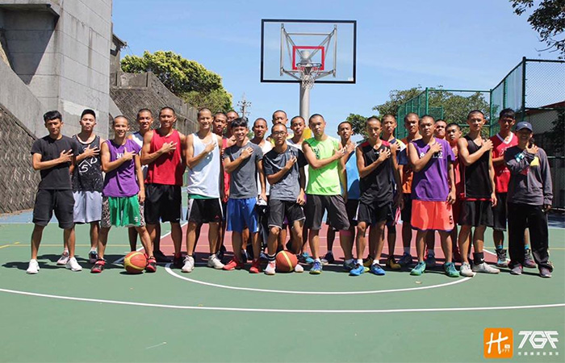

貼文時間：2017/09/11

位於台灣基隆市安樂區佛祖嶺上，學校又別稱為「翠嶺」。前身為基隆市立安樂國民中學，於2000年改制為完全中學。安樂高中籃球隊有男女籃之分，女籃奔馳在甲級賽場，是十二強及八強的常客，實力強韌；男籃部分也不是省油的燈，過去也曾在甲級賽場奮鬥，近年轉戰乙級，也持續打出亮眼的成績…
安樂高中男籃成立於89學年度，因招收體育班，起先挑戰的是甲級聯賽，在現今女籃教練吳長亨老師的帶領下，於89至93學年度打進十六強，至98學年度後轉戰乙級，多次打進北區複賽，數度打進北區十二強、六強，是為近年北區複賽的重點學校之一。
現任男籃教練的楊雅雯老師表示，球隊成立的理念主要為培養在地球員，招收如頭前、光榮國中等具底子的國中球員，使得學生在升學上多一份管道，近年更有新北市青山、汐止國中等學生慕名而來，球隊招生成效逐漸成形。
在訓練上，楊教練表示，多採循序漸進的方式，由體能帶動防守、防守培養契合度、再透過比賽加以磨練。球風上，安樂採用外線攻勢，運用後衛突破分球製作空檔，防守採取全場壓迫居多，二二一區域帶包夾也是安樂的拿手好菜，此外，校友鄭鉅鈞回到母校擔任助教，規劃球隊訓練，為球隊注入活力，同樣攻不可沒。
隨著105學年度的結束，安樂在北區複賽鍛羽而歸， 針對今年的調整，楊教練說到，會加強球員的身體素質，控制傷兵問題，以及鍛鍊球員的抗壓力，多打比賽讓球員提早做好心理建設和實際臨場感。楊教練也說，雙後衛羅弘崴、簡煜明是球隊今年的主力後場，期待他們能穩定輸出火力，控制比賽節奏，掌握成敗關鍵。
帶隊幾年下來，談到印象最深的事，楊教練說，102學年在北區複賽十二強絕殺花蓮四維高中，眼見大勢已去，想不到小球員頂住了壓力，奇蹟似的帶走勝利，也追平隊史最佳的北區六強。
安樂高中除了過去在甲級聯賽的佳績外，轉戰乙級後也表現不俗的團隊戰力，雖多次挑戰全國八強失利，球隊仍抱著激昂的鬥志備戰下個賽季，目標是創下隊史最佳的全國八強，在雨都基隆，翠嶺半山腰上的球場，安樂高中要用拿手的速度，如同獵豹般兇猛，殺出北區四強的窄門！